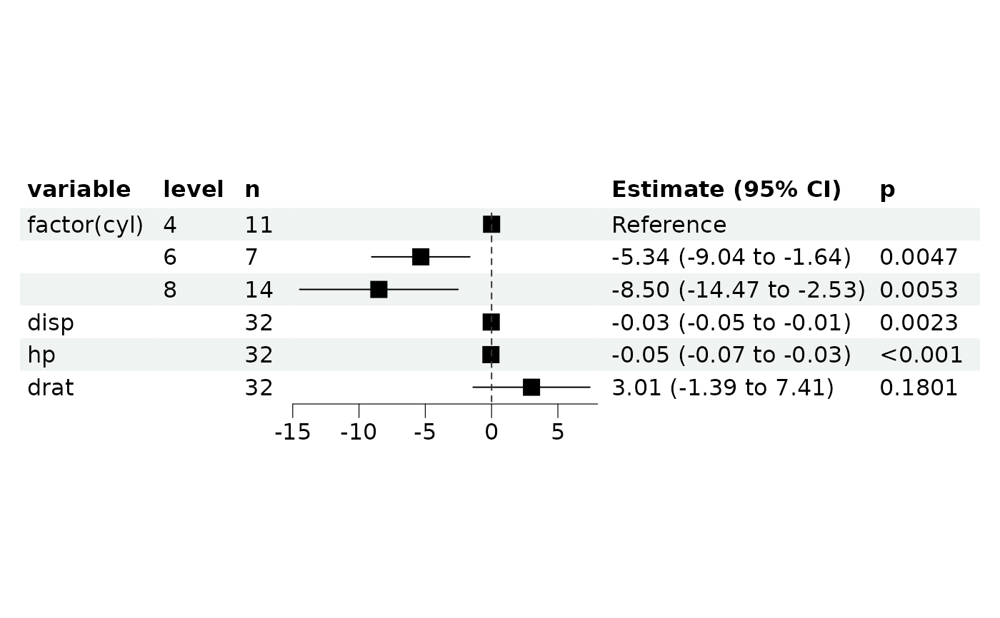

Contains fields storing data and methods to build, process and visualize a list of regression model. Currently, this class is designed for CoxPH and GLM regression models.
Public fields
dataa
data.tablestoring modeling data.xfocal variables (terms).
ypredicted variables or expression.
covarscovariables.
mlista list of
REGModel.argsother arguments used for building model.
typemodel type (class).
resultmodel result, a object of
parameters_model. Can be converted into data.frame withas.data.frame()ordata.table::as.data.table().forest_datamore detailed data used for plotting forest.
Methods
Method new()
Create a REGModelList object.
Usage
REGModelList$new(data, y, x, covars = NULL)Method build()
Build REGModelList object.
Usage
REGModelList$build(
f = c("coxph", "binomial", "gaussian", "Gamma", "inverse.gaussian", "poisson",
"quasi", "quasibinomial", "quasipoisson"),
exp = NULL,
ci = 0.95,
...
)Arguments
fa length-1 string specifying modeling function or family of
glm(), default is 'coxph'. Other options are members of GLM family, seestats::family(). 'binomial' is logistic, and 'gaussian' is linear.explogical, indicating whether or not to exponentiate the the coefficients.
ciconfidence Interval (CI) level. Default to 0.95 (95%). e.g.
survival::coxph()....other parameters passing to corresponding regression model function.
Method plot_forest()
plot forest.
Arguments
ref_linereference line, default is
1for HR.xlimlimits of x axis.
...other plot options passing to
forestploter::forest(). Also check https://github.com/adayim/forestploter to see more complex adjustment of the result plot.
Examples
ml <- REGModelList$new(
data = mtcars,
y = "mpg",
x = c("factor(cyl)", colnames(mtcars)[3:5]),
covars = c(colnames(mtcars)[8:9], "factor(gear)")
)
ml
#> <REGModelList> ==========
#>
#> X(s): factor(cyl), disp, hp, drat
#> Y(s): mpg
#> covars: vs, am, factor(gear)
#>
#> Not build yet, run $build() method
#> [] model ==========
ml$print()
#> <REGModelList> ==========
#>
#> X(s): factor(cyl), disp, hp, drat
#> Y(s): mpg
#> covars: vs, am, factor(gear)
#>
#> Not build yet, run $build() method
#> [] model ==========
ml$plot_forest()
#> Please run $build() before $plot_forest()
#> NULL
ml$build(f = "gaussian")
ml$print()
#> <REGModelList> ==========
#>
#> X(s): factor(cyl), disp, hp, drat
#> Y(s): mpg
#> covars: vs, am, factor(gear)
#> ----
#> Result:
#> focal_term variable estimate SE CI CI_low
#> 1: factor(cyl) (Intercept) 23.28425686 3.102848398 0.95 17.20278575
#> 2: factor(cyl) factor(cyl)6 -5.34044537 1.887666208 0.95 -9.04020315
#> 3: factor(cyl) factor(cyl)8 -8.50258933 3.046261922 0.95 -14.47315299
#> 4: factor(cyl) vs 1.68270326 2.353962963 0.95 -2.93097937
#> 5: factor(cyl) am 4.31056447 2.156460225 0.95 0.08398010
#> 6: factor(cyl) factor(gear)4 -1.24673744 2.264460155 0.95 -5.68499779
#> 7: factor(cyl) factor(gear)5 -2.08223718 2.637768301 0.95 -7.25216805
#> 8: disp (Intercept) 24.65009765 3.360529174 0.95 18.06358150
#> 9: disp disp -0.02821806 0.009243695 0.95 -0.04633537
#> 10: disp vs 3.32060607 1.856416709 0.95 -0.31790382
#> 11: disp am 4.67281942 2.094171633 0.95 0.56831844
#> 12: disp factor(gear)4 -2.52785760 2.211888366 0.95 -6.86307914
#> 13: disp factor(gear)5 -2.89344598 2.574494892 0.95 -7.93936325
#> 14: hp (Intercept) 24.56544525 2.420389406 0.95 19.82156919
#> 15: hp hp -0.05145024 0.012010845 0.95 -0.07499106
#> 16: hp vs 3.01661776 1.574374865 0.95 -0.06910027
#> 17: hp am 5.11093165 1.798753134 0.95 1.58544029
#> 18: hp factor(gear)4 -1.34845141 1.896221483 0.95 -5.06497722
#> 19: hp factor(gear)5 1.16396634 2.363608073 0.95 -3.46862036
#> 20: drat (Intercept) 5.36259687 7.058661715 0.95 -8.47212587
#> 21: drat drat 3.01056864 2.245957350 0.95 -1.39142687
#> 22: drat vs 6.56480882 1.648702814 0.95 3.33341068
#> 23: drat am 6.04958546 2.304973039 0.95 1.53192132
#> 24: drat factor(gear)4 -2.50572707 2.796115713 0.95 -7.98601316
#> 25: drat factor(gear)5 -3.13453090 3.068393855 0.95 -9.14847234
#> focal_term variable estimate SE CI CI_low
#> CI_high t df_error p
#> 1: 29.36572797 7.5041555 25 6.182588e-14
#> 2: -1.64068758 -2.8291259 25 4.667533e-03
#> 3: -2.53202568 -2.7911550 25 5.252031e-03
#> 4: 6.29638589 0.7148385 25 4.747089e-01
#> 5: 8.53714885 1.9989075 25 4.561837e-02
#> 6: 3.19152291 -0.5505672 25 5.819304e-01
#> 7: 3.08769369 -0.7893935 25 4.298820e-01
#> 8: 31.23661380 7.3351834 26 2.214181e-13
#> 9: -0.01010075 -3.0526817 26 2.268064e-03
#> 10: 6.95911596 1.7887180 26 7.366023e-02
#> 11: 8.77732040 2.2313450 26 2.565828e-02
#> 12: 1.80736393 -1.1428504 26 2.531007e-01
#> 13: 2.15247129 -1.1238888 26 2.610602e-01
#> 14: 29.30932132 10.1493773 26 3.334845e-24
#> 15: -0.02790942 -4.2836487 26 1.838531e-05
#> 16: 6.10233579 1.9160734 26 5.535576e-02
#> 17: 8.63642301 2.8413747 26 4.491950e-03
#> 18: 2.36807440 -0.7111255 26 4.770065e-01
#> 19: 5.79655303 0.4924532 26 6.223990e-01
#> 20: 19.19731961 0.7597186 26 4.474228e-01
#> 21: 7.41256416 1.3404389 26 1.801027e-01
#> 22: 9.79620695 3.9818024 26 6.839463e-05
#> 23: 10.56724960 2.6245797 26 8.675598e-03
#> 24: 2.97455903 -0.8961457 26 3.701750e-01
#> 25: 2.87941055 -1.0215543 26 3.069919e-01
#> CI_high t df_error p
#> [glm/lm] model ==========
ml$result
#> focal_term variable estimate SE CI CI_low
#> 1: factor(cyl) (Intercept) 23.28425686 3.102848398 0.95 17.20278575
#> 2: factor(cyl) factor(cyl)6 -5.34044537 1.887666208 0.95 -9.04020315
#> 3: factor(cyl) factor(cyl)8 -8.50258933 3.046261922 0.95 -14.47315299
#> 4: factor(cyl) vs 1.68270326 2.353962963 0.95 -2.93097937
#> 5: factor(cyl) am 4.31056447 2.156460225 0.95 0.08398010
#> 6: factor(cyl) factor(gear)4 -1.24673744 2.264460155 0.95 -5.68499779
#> 7: factor(cyl) factor(gear)5 -2.08223718 2.637768301 0.95 -7.25216805
#> 8: disp (Intercept) 24.65009765 3.360529174 0.95 18.06358150
#> 9: disp disp -0.02821806 0.009243695 0.95 -0.04633537
#> 10: disp vs 3.32060607 1.856416709 0.95 -0.31790382
#> 11: disp am 4.67281942 2.094171633 0.95 0.56831844
#> 12: disp factor(gear)4 -2.52785760 2.211888366 0.95 -6.86307914
#> 13: disp factor(gear)5 -2.89344598 2.574494892 0.95 -7.93936325
#> 14: hp (Intercept) 24.56544525 2.420389406 0.95 19.82156919
#> 15: hp hp -0.05145024 0.012010845 0.95 -0.07499106
#> 16: hp vs 3.01661776 1.574374865 0.95 -0.06910027
#> 17: hp am 5.11093165 1.798753134 0.95 1.58544029
#> 18: hp factor(gear)4 -1.34845141 1.896221483 0.95 -5.06497722
#> 19: hp factor(gear)5 1.16396634 2.363608073 0.95 -3.46862036
#> 20: drat (Intercept) 5.36259687 7.058661715 0.95 -8.47212587
#> 21: drat drat 3.01056864 2.245957350 0.95 -1.39142687
#> 22: drat vs 6.56480882 1.648702814 0.95 3.33341068
#> 23: drat am 6.04958546 2.304973039 0.95 1.53192132
#> 24: drat factor(gear)4 -2.50572707 2.796115713 0.95 -7.98601316
#> 25: drat factor(gear)5 -3.13453090 3.068393855 0.95 -9.14847234
#> focal_term variable estimate SE CI CI_low
#> CI_high t df_error p
#> 1: 29.36572797 7.5041555 25 6.182588e-14
#> 2: -1.64068758 -2.8291259 25 4.667533e-03
#> 3: -2.53202568 -2.7911550 25 5.252031e-03
#> 4: 6.29638589 0.7148385 25 4.747089e-01
#> 5: 8.53714885 1.9989075 25 4.561837e-02
#> 6: 3.19152291 -0.5505672 25 5.819304e-01
#> 7: 3.08769369 -0.7893935 25 4.298820e-01
#> 8: 31.23661380 7.3351834 26 2.214181e-13
#> 9: -0.01010075 -3.0526817 26 2.268064e-03
#> 10: 6.95911596 1.7887180 26 7.366023e-02
#> 11: 8.77732040 2.2313450 26 2.565828e-02
#> 12: 1.80736393 -1.1428504 26 2.531007e-01
#> 13: 2.15247129 -1.1238888 26 2.610602e-01
#> 14: 29.30932132 10.1493773 26 3.334845e-24
#> 15: -0.02790942 -4.2836487 26 1.838531e-05
#> 16: 6.10233579 1.9160734 26 5.535576e-02
#> 17: 8.63642301 2.8413747 26 4.491950e-03
#> 18: 2.36807440 -0.7111255 26 4.770065e-01
#> 19: 5.79655303 0.4924532 26 6.223990e-01
#> 20: 19.19731961 0.7597186 26 4.474228e-01
#> 21: 7.41256416 1.3404389 26 1.801027e-01
#> 22: 9.79620695 3.9818024 26 6.839463e-05
#> 23: 10.56724960 2.6245797 26 8.675598e-03
#> 24: 2.97455903 -0.8961457 26 3.701750e-01
#> 25: 2.87941055 -1.0215543 26 3.069919e-01
#> CI_high t df_error p
ml$forest_data
#> focal_term variable term term_label class level level_no n
#> 1: factor(cyl) factor(cyl) factor(cyl)4 factor(cyl) factor 4 1 11
#> 2: factor(cyl) <NA> factor(cyl)6 factor(cyl) factor 6 2 7
#> 3: factor(cyl) <NA> factor(cyl)8 factor(cyl) factor 8 3 14
#> 4: disp disp disp disp numeric <NA> NA 32
#> 5: hp hp hp hp numeric <NA> NA 32
#> 6: drat drat drat drat numeric <NA> NA 32
#> estimate SE CI CI_low CI_high t df_error
#> 1: 0.00000000 NA NA NA NA NA NA
#> 2: -5.34044537 1.887666208 0.95 -9.04020315 -1.64068758 -2.829126 25
#> 3: -8.50258933 3.046261922 0.95 -14.47315299 -2.53202568 -2.791155 25
#> 4: -0.02821806 0.009243695 0.95 -0.04633537 -0.01010075 -3.052682 26
#> 5: -0.05145024 0.012010845 0.95 -0.07499106 -0.02790942 -4.283649 26
#> 6: 3.01056864 2.245957350 0.95 -1.39142687 7.41256416 1.340439 26
#> p reference
#> 1: NA TRUE
#> 2: 4.667533e-03 FALSE
#> 3: 5.252031e-03 FALSE
#> 4: 2.268064e-03 FALSE
#> 5: 1.838531e-05 FALSE
#> 6: 1.801027e-01 FALSE
ml$plot_forest()
